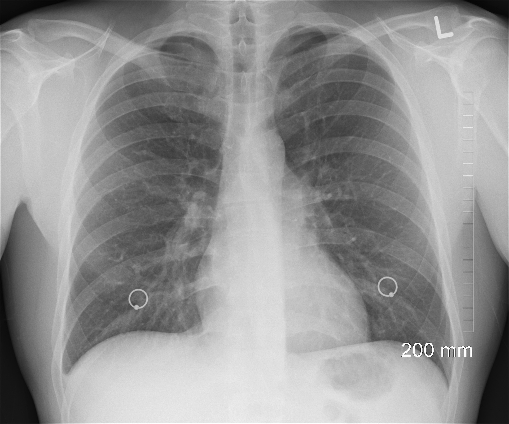
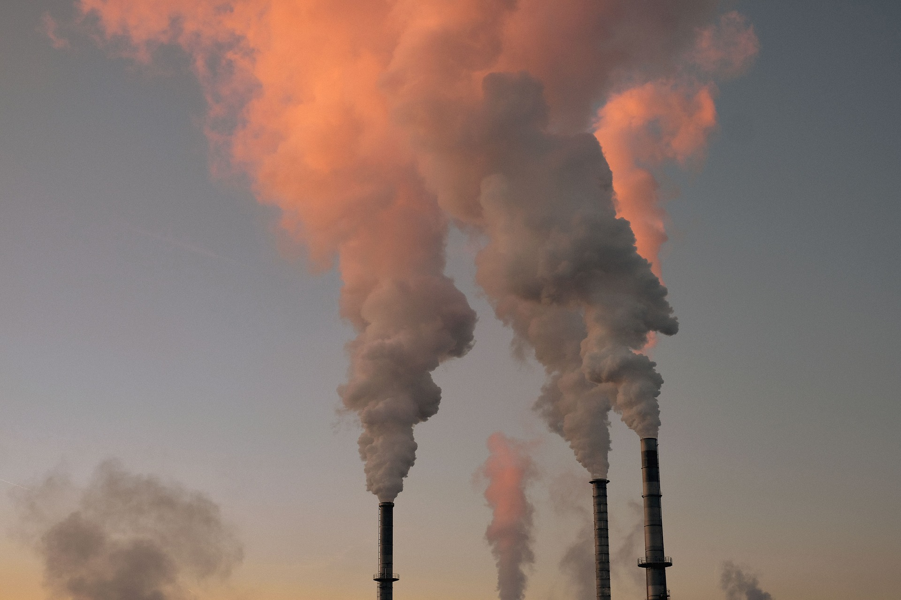

Air pollution involves harmful contaminants in the atmosphere that can damage human health. Inhalation of these pollutants can affect the respiratory tract. This can cause a variety of different complications such as inflammation, oxidative stress, immune suppression, and cellular mutations, which can harm the lungs, heart, brain, and other organs, leading to disease.
“Air pollution is the presence of harmful substances like gases, particles, or biological materials in the atmosphere, which can negatively impact human health, the environment, and the climate.”
Impact of air pollution
WHO describes the main impact of air pollution on our health and wellbeing
How does air pollution lead to the development of disease?
What organs are impacted by air pollution?

Air pollution can affect almost every organ in the body. Tiny pollutants can enter the bloodstream through the lungs, causing systemic inflammation and increasing cancer risk.
What diseases are associated with exposure to air pollution?
Air pollution increases the risk of diseases like stroke, heart disease, Chronic obstructive pulmonary disease (COPD), lung cancer, pneumonia, and cataracts (from household pollution). It may also contribute to pregnancy complications, cancers, diabetes, and neurological issues.
What are some of the most important air pollutants leading to disease?

Key air pollutants of public health concern include particulate matter (PM), carbon monoxide (CO), ozone (O3), nitrogen dioxide (NO2), and sulphur dioxide (SO2). Fine particulate matter poses the greatest risk, as it can penetrate lungs, enter the bloodstream, and harm tissues and organs systemically.
Preventative strategies and solutions for air pollution
Use public transport, walk, or cycle instead of driving when possible
Avoid idling your car engine and opt for low-emission vehicles

Limit the use of wood-burning stoves and fossil fuels for heating
Check daily air pollution forecasts to plan activities

Exercise earlier in the day when air quality is better
Stick to quieter streets and walk on the inner side of pavements